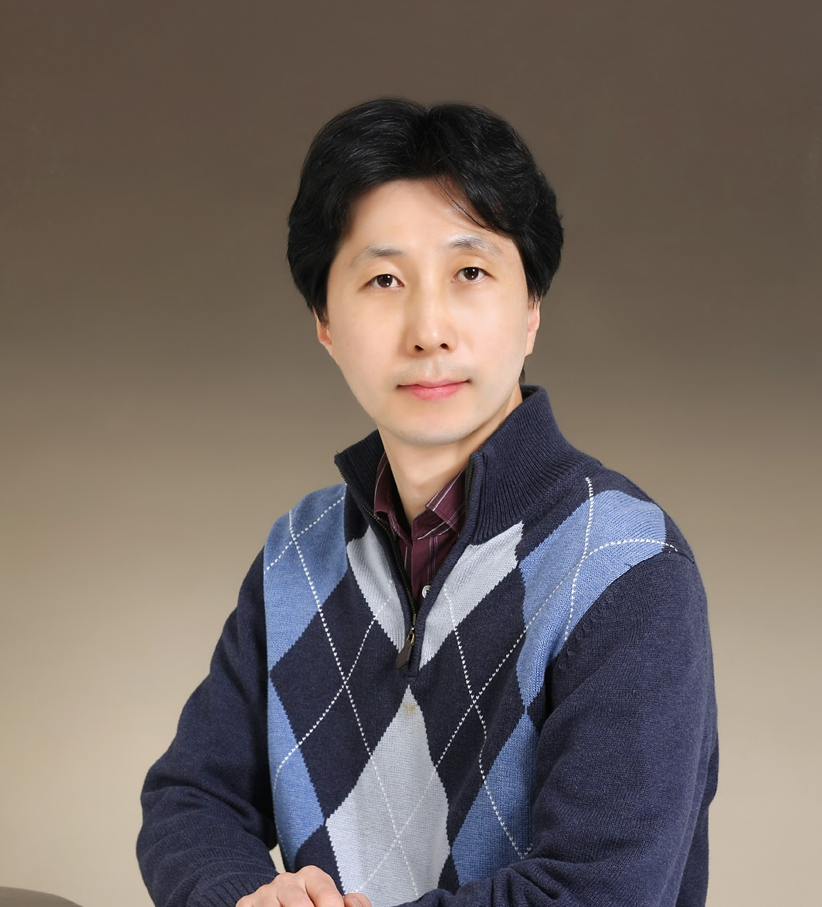
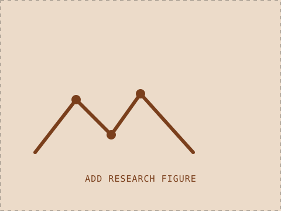
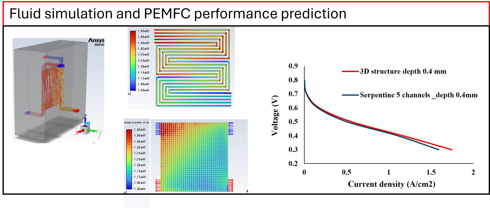
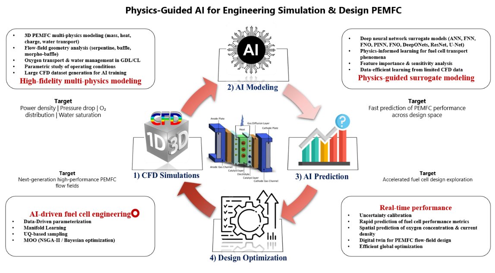
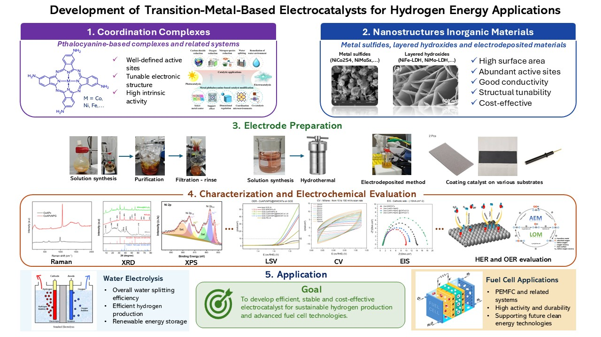
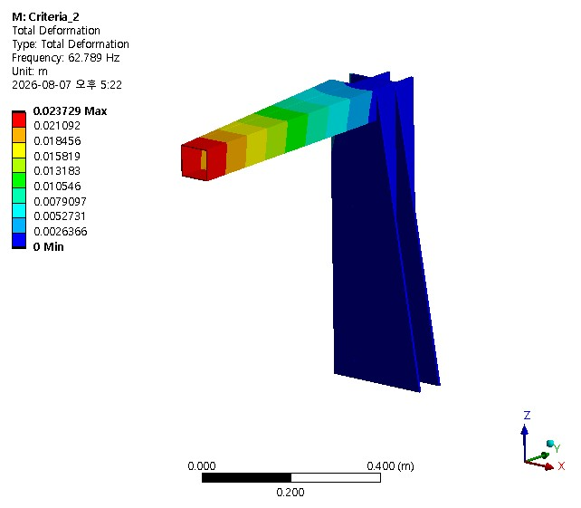
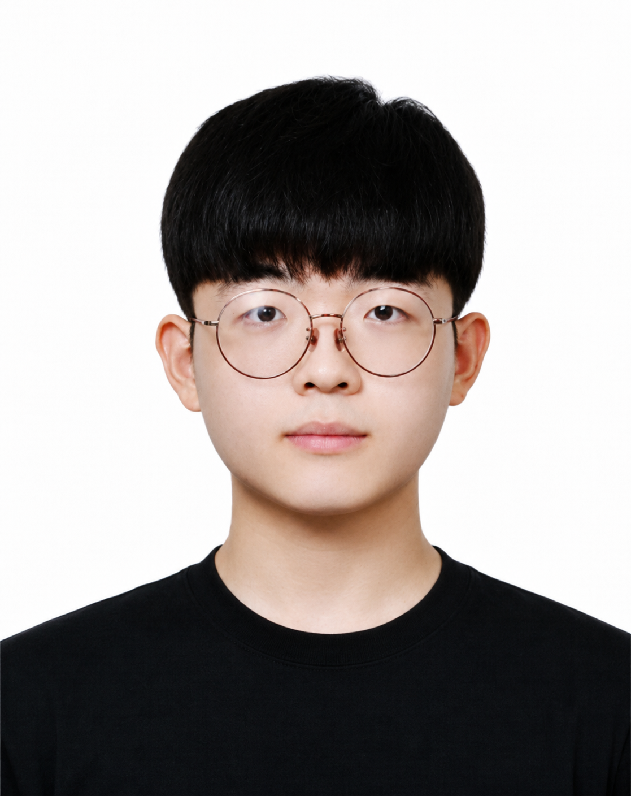
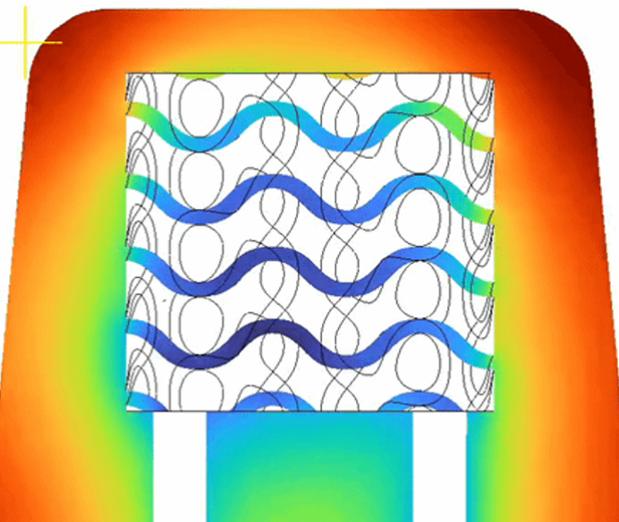

Professor

HyunChul Kim
Professor HyunChul Kim is a member of the Department of Future Automotive Engineering and a director of the KNU Intelligent Manufacturing Technology Laboratory. His expertise lies in CAD/CAM system, precision machining, flexible electronics, HER/OER and fuel cells.
Experience
- Current · Kongju National University — Director, Intelligent Manufacturing Technology Laboratory; Dept. of Future Automotive Engineering
- 2008 – 2022 · Inje University, Professor
- 2006 – 2008 · Samsung Electronics
- 2005 – 2006 · MIT, Postdoctoral Researcher
Education
- 2005 · Ph.D, Mechanical Engineering — KAIST (Korea Advanced Institute of Science and Technology)
- M.S., Mechanical Engineering — KAIST
- B.S., Mechanical Engineering — KAIST
Postdoctoral Fellow
 Nguyen Ba Hieu
CFD, FEM, Wind Turbine, Fuel Cell
Nguyen Ba Hieu
CFD, FEM, Wind Turbine, Fuel Cell

This member hasn't submitted a research write-up yet — see the submission template to add one.
 Shantharaja
Metal complex synthesis; HER/OER/ORR, PEM fuel cell
Shantharaja
Metal complex synthesis; HER/OER/ORR, PEM fuel cell
My research investigates advanced nanostructured materials for enhancing the performance of Proton Exchange Membrane Fuel Cells (PEMFCs). By designing efficient electrocatalysts and optimizing electrode architectures, I improve oxygen reduction and hydrogen oxidation reactions while lowering material costs. The outcomes support the development of high-performance and sustainable hydrogen energy systems.
 Shambhulinga Araleka
Water electrolysis, PEMFC, batteries, redox-active MN4 macrocycles
Shambhulinga Araleka
Water electrolysis, PEMFC, batteries, redox-active MN4 macrocycles
This member hasn't submitted a research write-up yet — see the submission template to add one.
Ph.D Candidate

Research on electrochemical reactions in fuel cells is complex, and micromachining components such as the membrane, GDL, or bipolar plate can help structure and optimize fuel cell operation. Simulation is a valuable tool for saving cost and time in this research.
Master Student

I integrate CFD, physics-guided AI, and multi-objective optimization to develop advanced PEMFC flow channels. AI surrogate models enable rapid prediction of flow, species transport, and cell performance across different geometries, while optimization identifies designs that improve power output, transport uniformity, and water management with minimal pressure and pumping penalties.

My research focuses on developing transition-metal-based electrocatalysts for hydrogen energy applications. I work with catalyst systems ranging from phthalocyanine-based coordination complexes to nanostructured inorganic materials such as metal sulfides and layered hydroxides, prepared through solution synthesis, hydrothermal methods, and electrodeposition. Their electrochemical activity and stability are evaluated mainly for the hydrogen evolution reaction (HER) and oxygen evolution reaction (OER), aiming toward efficient and durable electrode materials for water electrolysis and future fuel cell applications.

I use finite element analysis and structural optimization to redesign the reinforcement of L-shaped hollow beams used in precision inspection equipment, reducing vibration at the free end without adding unnecessary weight.

한순민 (Sunmin Han) Mold cooling & structural simulation
I research reducing cooling times by integrating Triply Periodic Minimal Surface (TPMS) cooling channels into metal 3D-printed injection molds. Through coupled thermal-fluid and structural simulations, my work derives optimal design conditions that resolve the trade-off between the cooling efficiency needed for rapid thermal dissipation and the structural rigidity needed to withstand injection pressures.
 황선재 (Seonjae Hwang)
Physics-informed neural networks for PEMFC
황선재 (Seonjae Hwang)
Physics-informed neural networks for PEMFC
I implement a physics-informed neural network surrogate model with limited CFD data to predict Polymer Electrolyte Membrane fuel cell performance without the need for additional simulations.
 이주영
Mechanical Engineering
이주영
Mechanical Engineering
This member hasn't submitted a research write-up yet — see the submission template to add one.
This member hasn't submitted a research write-up yet — see the submission template to add one.
Undergraduate Student
 조지현
Future & Automotive Engineering
조지현
Future & Automotive Engineering
This member hasn't submitted a research write-up yet — see the submission template to add one.
Filling in a research card: once a member sends their filled-out copy of
templates/student-research-template.md (photo + one research figure + a short write-up),
duplicate a .research-card block above, drop their figure into images/research/
or images/team/, and replace the rc-figure src, rc-title, and
rc-desc text. Add an optional .rc-keywords list of <span>
tags for 2–4 keywords.